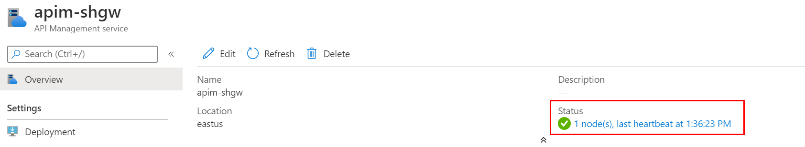

Deploy self-hosted gateway
In the previous tutorials, you've deployed the APIM instance in the internal VNET and integrated it with the AppGW. In this tutorial, we expand the deployment with a self-hosted gateway to extend the capacity and redundancy of the APIM instance.
In this tutorial, you learn to:
- ✅ Deploy an Azure Kubernetes Service (AKS) cluster in the VNET
- ✅ Deploy a self-hosted gateway in the AKS cluster
Deploy an AKS cluster to host the self-hosted gateway
The self-hosted gateway of APIM is a containerized, functionally-equivalent version of the managed gateway that is part of every APIM service deployed. It can be deployed to Docker, Kubernetes, or any other container orchestration solution running on a server cluster on premises, cloud infrastructure, or for evaluation and development purposes, on a personal computer. In this tutorial, we deploy an AKS cluster to host the self-hosted gateway.
Create a service principal and assign permissions
To allow the AKS cluster to access the VNET and subnet, we need to configure it with a service principal.
-
In the Azure Portal, open Cloud Shell and choose Bash as the shell.
-
Run the following command to create the service principal and take a note on the output. We need to use it later.
az ad sp create-for-rbac --skip-assignment -
Assign the service principal Network Contributor role to the VNET with the following command.
<appId>is the value ofappIdfrom the output of the above step.VNET_ID=$(az network vnet show --resource-group apim-rg --name apim-vnet --query id -o tsv) az role assignment create --assignee <appId> --scope $VNET_ID --role "Network Contributor"
Deploy the AKS cluster with Azure Portal
We deploy the AKS cluster to the VNET and the corresponding subnet. For details about the AKS networking, please see this document.
-
In the Azure Portal, add a new resource to the apim-rg resource group.
-
Search
Kubernetes Serviceand click Create. -
Choose resource group
apim-rg, regionEast USand give the cluster a name such asapim-aks. Accept other default settings and move to Next: Node pools. -
Accept default settings for node pools and move to Next: Authentication.
-
Choose Service principal as the Authentication method and click Configure service principal to configure it.
-
Choose Use existing, and input the client ID and client secret. They are the values of appID and password from the output of creating the service principal command.

-
Move to Next: Networking.
-
Choose Advanced for Network configuration option and apply the settings as shown in the diagram below.

-
Click Review + create and then click Create to deploy the AKS cluster.
-
When the deployment is completed, open Cloud Shell and run the following command. Make sure the cluster info of the AKS cluster can be shown.
az aks get-credentials --resource-group apim-rg --name apim-aks kubectl cluster-info
Deploy the self-hosted gateway
-
In the Azure Portal, go to the API Management.
-
Click Gateways and click Add to add a self-hosted gateway as shown below.

-
When the gateway is added, click it to open its settings.
-
Click Deployment and then click Kubernetes.
In normal cases, we can use the yaml to deploy the gateway straightly. But as we are in an internal VNET environment, we need to make some changes to the yaml before it can be deployed.
-
Open the Cloud Shell. Copy and run the following command to create the secret for the gateway key in AKS first.

As we are using custom domain names and self-signed SSL certificate, the certificate needs to be trusted by the self-hosted gateway. We create a configMap to install the certificate to the gateway pod.
In production environment, you would want to use more secured options, such as Pod Identity and Azure Key Vault, to manage the certificates.
-
In the Cloud Shell, upload contoso-signing-root.cer.

-
Convert the CER to PEM before it can be used for the gateway pod.
openssl x509 -inform der -in contoso-signing-root.cer -out contoso-signing-root.pem -
Create a configMap in the AKS for the certificate.
kubectl create configmap signing-root --from-file=contoso-signing-root.pem
We need to make 3 changes to the yaml file generated by APIM.
- Change the config.service.endpoint to use the custom domain name of the management service endpoint.
- Install the certificate to the pod so that it can be trusted by the pod.
- Use an internal load balancer to expose the gateway service.
-
Open the editor of the Cloud Shell, and then copy and paste the content of the yaml generated by APIM to it.

-
Change the domain name of config.service.endpoint to
apim-mgmt.contoso.net. -
Add the annotation for the internal load balancer,
service.beta.kubernetes.io/azure-load-balancer-internal: "true", to the service. -
Create a volume based on the configMap
signing-rootand mount thecontoso-signing-root.pemfrom it. The complete code of the yaml is shown below.Note that you need to change the
<subscription id>in config.service.endpoint.# NOTE: Before deploying into production please review documentation -> https://aka.ms/self-hosted-gateway-production --- apiVersion: v1 kind: ConfigMap metadata: name: apim-shgw-env data: # change to the domain name of management endpoint config.service.endpoint: "https://apim-mgmt.contoso.net/subscriptions/<subscription id>/resourceGroups/apim-rg/providers/Microsoft.ApiManagement/service/apiminst32?api-version=2019-12-01" --- apiVersion: apps/v1 kind: Deployment metadata: name: apim-shgw spec: replicas: 1 selector: matchLabels: app: apim-shgw template: metadata: labels: app: apim-shgw spec: containers: - name: apim-shgw image: mcr.microsoft.com/azure-api-management/gateway:latest ports: - name: http containerPort: 8080 - name: https containerPort: 8081 env: - name: config.service.auth valueFrom: secretKeyRef: name: apim-shgw-token key: value envFrom: - configMapRef: name: apim-shgw-env volumeMounts: # mount the signing certificate - name: signing-root-volume mountPath: /etc/ssl/certs/contoso-signing-root.pem subPath: contoso-signing-root.pem readOnly: false volumes: - name: signing-root-volume configMap: name: signing-root --- apiVersion: v1 kind: Service metadata: name: apim-shgw annotations: # use internal load balancer service.beta.kubernetes.io/azure-load-balancer-internal: "true" spec: type: LoadBalancer ports: - name: http port: 80 targetPort: 8080 - name: https port: 443 targetPort: 8081 selector: app: apim-shgw -
Save the yaml to a file,
apim-shgw.yaml, and run the following command to deploy it.kubectl apply -f ./apim-shgw.yaml -
When the self-hosted gateway is deployed successfully, you would see 1 node in the status of the self-hosted gateway in the Azure Portal.

In case if the deployment is completed but the node in the status keeps showing 0, you can check the log of pod with
kubectl logs <pod-name>to find out what is wrong. Possible reasons could be the URL of the management endpoint is incorrect or the root certificate is not installed properly.
In the next tutorial, we will integrate the self-hosted gateway with the Application Gateway.